続くブラッシング（コーミング！？） [梅吉]
今日は朝から良い天気ですねー＾＾
まるで梅雨が明けたかの様。
大阪は真夏特有のスモッグがかかった様な鈍い青空が広がっています。
梅雨も終盤のこの頃、梅吉さんの換毛期も終わりを迎えている様です。
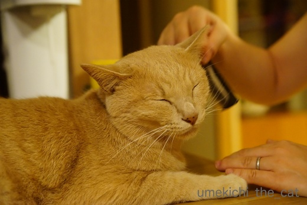
クシの感触を忘れてしまわない様に抜け毛は減ってもお手入れは続行中。
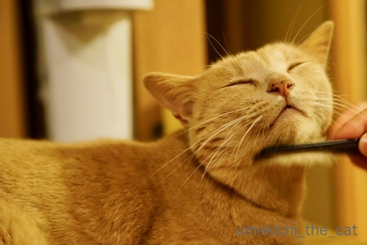
減ったと言っても結構抜けますw
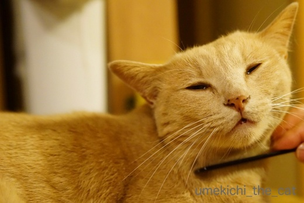
それに逆鱗ポイントのおしっぽじゃなければ
気持ち良いんですよねー＾＾
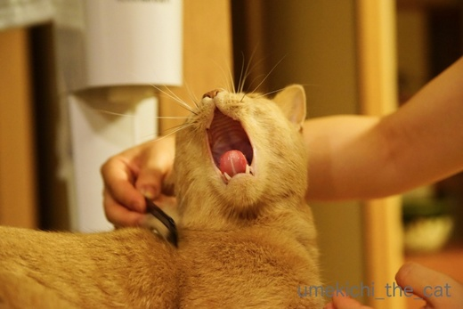
おっきなあくびだねー(≧▽≦)
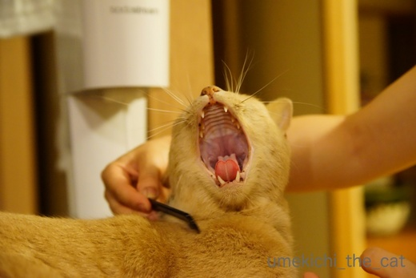
舌の先っちょがハートみたいになってます♡
（クリックで拡大します）

すっかりリラックスしてくれた様でしたv
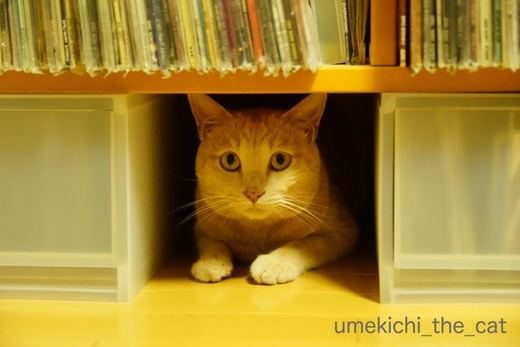
遊び気分の時の秘密基地。
本気で怖い時はここには入りません。
ここに入る時はじゃらしとおとーさんの足を狙う時w
梅吉も日常を取り戻した様です＾＾
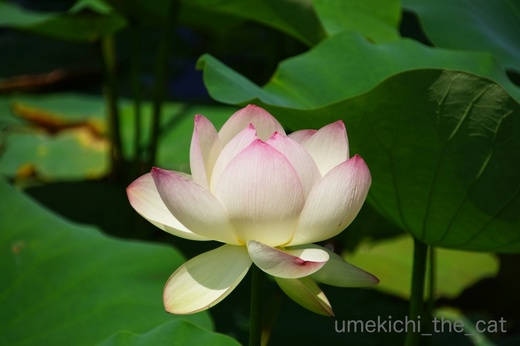
真夏の花、ハスが咲き始めていました。
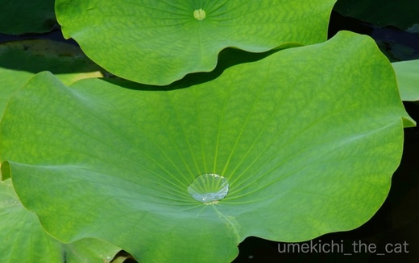
葉っぱに溜まる水が涼感たっぷりです。
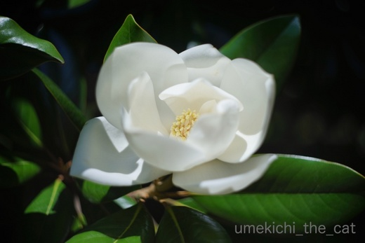
泰山木。良い香りを漂わせていました。
この肉厚の花びら、天ぷらにしたら美味しそうと常々思っております( ´艸｀)
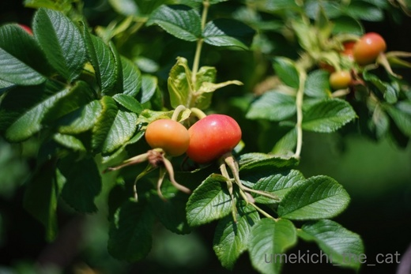
ハマナスは花が終わって実をつけていました。
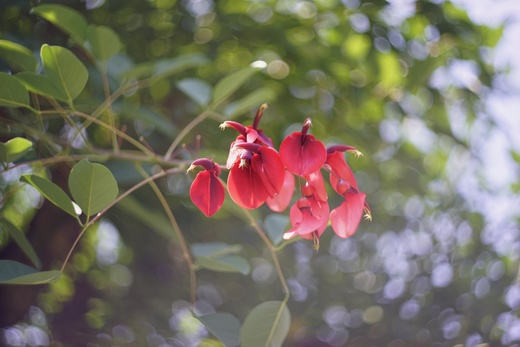
見れば見るほど不思議な形をしている（私にとっては）デイゴ。
ぐるぐるボケレンズでさらに不思議な雰囲気に。
皆さん、目を回さないでくださいね(◎_◎)

カフェオレ色の梅吉

梅吉 2023年8月10日 永眠


梅吉と出会った譲渡会

犬猫の理由なき殺処分ゼロ
妄想広告
UMEKICHI 光

爆発的に早い！
時々攻撃的！
Thanks to Mr.Boss365
爆発的に早い！
時々攻撃的！
Thanks to Mr.Boss365

クシのお手入れ、なんと満足そうな良い顔でしょう。
ほのぼのとしてきます。
クリックで拡大して、ハートの舌を拝見（笑）
ハートにピッタリな、健康な色と形ですね。
余震があるのでどうかなと心配していましたが、
日常を取り戻せて良かったです。
マンションの敷地内で梅吉さんそっくりのニャンちゃんを見ました。
マンションの敷地内で見るのは初めてです。
駐車した車の下に横になっていました。
嬉しくなってしゃがみこむと、ニャンさんはジーと見てからの戦闘体勢（笑）
サングラスしていました。
あっという間に駐車場の奥へ走り去りました（悲）
撮りたかった、ホントそっくりでした。
もしかして出張してきた？（笑）
by kiki (2018-06-25 12:38)
なんて気持ち良さそうなのでしょう♪
あくびまでしてリラックス(#^.^#)
ガジガジしている時しかブラッシング出来ない
我が子に見せてあげなくっちゃ！！
ハートの舌も最高ですね！
梅吉さんに日常が戻って来て良かったです♪
by きぃ (2018-06-25 16:11)
こんにちは。
メンテナンスでコメント出来ない！！（￣ ￣！！）
梅吉君！！ブラッシング気持ち良さそうで！！至福顔ですね！！
逆鱗ポイントは「おしっぽ」ですか？すももと同じです！！（￣ ￣！！）
気持ち良く寝ていてかつ、秘密基地でスタンバイ！！
地震のトラウマから日常を取り戻した様で安心ですね！！(=^･ｪ･^=)
by Boss365 (2018-06-25 16:12)
櫛のお手入れ、梅吉さん～なんて気持ちが良さそうなんでしょう。
こちらも眠くなってきたほどです＾＾
ハート型の舌！ ラブラブですねえ＾＾
蓮に泰山木。美しい‥＾＾
日常が戻ってきて、平和な日が続くといいなあ‥
しかし今日は暑いです＾＾；
by sana (2018-06-25 18:04)
ソネブロがなんか変でnice!押すのに一旦前の記事に戻らないとでした。自分の管理ページも記事管理に入れないし皆さんは普通に使えてるのでしょうか。うんざりしてましたが、梅吉さんの可愛いハート舌で和みました。ありがとう。
by zombiekong (2018-06-25 18:08)
梅吉さん大きな口でアクビしてますね！
今日の曽根風呂は動きが変です(^^)
by ma2ma2 (2018-06-25 18:55)
極楽ですね、梅吉さん。
いいなああ(^^)
by riverwalk (2018-06-25 19:48)
梅吉さん、大きなアクビまでして本当に気持ちよさそうですね(^^)
今度、しょうちゃんにもブラッシングしてみようかな・・・。
by kou (2018-06-25 19:53)
梅吉様、どれも至福の表情に見えます(^^)
「葉っぱに溜まる水」、何気ないのに涼感
以上のものまで、何故か感じます(〃'∇'〃)
ウチの泰山木、10m近くあるので、お花も
メチャ高い位置に咲いちゃうんですよ^_^;
by middrinn (2018-06-25 21:03)
梅吉さん、なんて気持ちよさそうなんでしょう♪
こんなお顔みせてくれたら下僕も幸せな気分になれますよね！
ウチの場合、いつ猫パンチをくらうかドキドキしながらのブラッシング・・まあそれはそれで楽しいのですが(^▽^;)
ハスの花、神々しくて美しいですね♪
早起きして撮影にお出かけされたんですか？？
もう花の撮り歩きは蒸し暑すぎて、なかなか出かける気力がわいてきません・・・。
by ゆきち (2018-06-25 21:19)
梅吉ちゃん＾＾
抵抗もせず反抗的な態度もなくとてもお利口さんブラッシングタイム！！！
気持ち良いでしょう(V)o￥o(V)
抜ける毛がなくなることはないです、人もニャンコさんも。
血行促進のためにもドンドン、ブラッシングしてもらってね。
ハートの舌は貴重です。
幸せを読む梅吉ちゃん♡＾＾♡サイン”””ｸﾀﾞｻｲー‘＾＾’
我が家はほとんどの子がブラッシング抵抗します。ちっちゃいときからやってるのにな～。なのでとっても羨ましいです。
ちぃさん、LPをたくさんお持ちですね。プレーヤーで聴かれるんですよね？私もいっぱいあるのですが全然聴けません。
ハスの葉の天ぷら。美味しいだろうな(*'▽')抹茶塩で？？？
by ake_i (2018-06-25 21:25)
めっちゃ気持ちよさそう♪
寝顔、癒されます～。^^)
by yes_hama (2018-06-25 21:35)
梅吉さん、とっても気持ちよさそうですねぇ( ^ω^ )
うちのニャンズに、ぜひともその気持ちよさを教えてください(_ _)
大御所はアメショーのはずなのに、ふわふわ猫っ毛が長いので
他の３ニャンよりも抜け毛が多いんですよねぇ(*_*)
なのにブラッシングもコームも嫌いなので
かみさんがひたすら撫でまくって手ぐしで抜け毛取ってます(⌒-⌒; )
梅吉さん、日常を取り戻されたんですねぇ=(^.^)=
一安心ですね♪( ´▽｀)
by ニッキー (2018-06-25 21:52)
次の記事で300ですぞ〜
お先におめでとう。
キリが良いって嬉しいですね。
by kiki (2018-06-25 23:00)
なんと気持ち良さそうなお顔（*´∀｀*）
解いて差し上げる下僕冥利に尽きますね♡
日常を取り戻したとのこと、何よりです。
ハスの花、きれいです。
こういう状態のものを生で見たこと、実はあまりありません。
by Ja-Kou66 (2018-06-26 00:36)
ぐるぐるボケレンズ、使ってますね＾＾
by ぽちの輔 (2018-06-26 06:43)
梅吉さん、大満足ヨカッタ！ヨカッタ！^^
by ニコニコファイト (2018-06-26 07:12)
気持ちよさそうにしてますね～。
クシでのブラッシングは、猫舌感覚に近いような気がします。
いいねぇ。ウトウト眠くなっちゃうね～(^.^)
我が家も、まだまだウハウハ抜けてますよー。
このままのペースで抜けたら、
ハゲるのではないかっ！とちょぴり真剣に心配ｗｗｗ
梅吉さん。先日の地震が、相当堪えたのですね。
少しずつ、少しずつ、怖いのが消えてなくなりますように(^-^)
コワいの、こわいの、飛んで行け～～っ！！
by morichan (2018-06-26 12:27)
梅吉くん、コーミングしてもらってサラサラだね(*^-^*)
リラックスして、幸せ満喫。
ホントだ！！おっきなあくびの舌がハートになってるよ～～っ！
そして、ちぃさんの手の可愛らしいこと。本当に小さいんだね(≧▽≦)
梅吉くんも普段通りに過ごせるようになってきてよかった！
パパもママも一安心だね(*^-^*)
by emi (2018-06-26 14:10)
ほんとーにこの櫛お気に入りなんですね。気持ちよさそうだこと(*´▽｀*)
by palpal (2018-06-26 15:07)
kikiさん＞
ハートの舌、見た方には幸運が訪れるとか( ´艸｀)
梅吉は時々（白目で）魂が何処かに飛んで行ってますので
kikiさんのお家の方まで出張していたのかもしれません＾＾
梅吉ならば戦闘態勢の時、木の枝でも草でもシュシュっと揺らせば
飛びついて来ますよ。
今度出会ったらお試しあれ！
その時は写真もお願いしますねー。見てみたい(｀_´)ゞ
次回で300記事、全然気づいていませんでした。
どうも私は数字に無頓着なようで・・・(^▽^;)
教えていただいてありがとうございます！！
きぃさん＞
イヤな時はガブっとして来たり逃げちゃったりしますが
気持ちの良い時もあるようです。
その見極めは全くできませんがw
思ったより早く地震から立ち直ったような気がします。
うちはあまり揺れなかったせいもあるかもしれません＾＾
Boss365さん＞
２５日は午後からずーっと変でしたよねwソネブロww
諸先輩の過去のお話や実体験から
サーバーがおバカになっている時はさっさと諦めることにしています。
皆様のブログ訪問ができなくて残念なのですけど。
おしっぽは、結構最近までぐるぐる追いかけたり
自分で抱え込んでガブガブしていたのに（笑）
ニャンゲンが触ると怒るんですよーw
大きな音には相変わらず反応していますが
落ち着いて警戒するだけになって来ました。私も一安心です＾＾
sanaさん＞
こんなに気持ちの良い顔をしてくれると
私もクシの入れ甲斐があります＾＾
もっとも嫌がって逃げちゃう時もありますけどw
梅吉のおっきなあくびは何度も見ていますが
舌の先がハート形になるなんて
写真で見て初めて知りました＾＾
毎日こんなのんきなアクビができる日が続きますように！
zombiekongさん＞
25日のソネブロおバカさんの日、
私はブログ活を早々にあきらめましたよw
近いうちにもう一度おバカさんになるんじゃ、とニラんでますw
その時にはハート形の目をした梅吉の写真でも載せちゃおうかしら ( ´艸｀)
（そんなのはありませんよーwww）
ma2ma2さん＞
大きなあくびはしょっちゅうですが
ハートの舌は初めて（写真で）見ました＾＾
ソネブロ、今回は25日だけで済むのかな、
また近いうちにあるかなと疑心暗鬼中・・・(^▽^;)
riverwalkさん＞
まいにち極楽、そんな風に過ごして欲しいです！
アイコン変えましたね！nice！！
（前のも好きでしたけど。魚だと気づいたのは最近で
笑った仏像の片目だとずーっと思っていました(〃▽〃) ）
kouさん＞
しょうちゃんの家は大家族さんみたいなので
ブラッシングはしてもらっていないかもしれませんねー。
とっても喜んでもらえるか、何すんのよー！と
お怒りになるか、のような気がしていますw
middrinnさん＞
ハスは雰囲気がありますよねー＾＾
あの溜まった水さえ甘露に変わっていそうです。
10メートル級の泰山木がお家にあると！？
植物園みたいな庭のあるお屋敷の主だったのですね！！！
花は愛でられないけど香りは漂っていそうですね(≧▽≦)
ゆきちさん＞
こてつくんのブラッシングはレクリエーションブラッシング♪
ドキドキな触れ合いの時間、楽しんでくださいませ(^_－)☆
ハスは咲き始めると植物園は朝７時からオープンしています・・・
が、そんな早起きをする根性もなく(^▽^;)
これは健気に真昼に咲いていてくれたハスをパチリとしましたw
でも、この時期真昼に歩き回るほうが根性ある、かしらー(*>艸<)
ake_iさん＞
嫌がってガブっと（梅吉はガブリエル、なんですw）したり
逃げちゃう時もあるのですが
「うむ、くるしゅうない」の時もあったりして・・・
とってもお利口さんに気持ち良さそうにしてくれますよ＾＾
そんな時はサインでもにくきゅう握手でもガブガブでも
なんでもOKですよー！ぜひぜひ＾＾
我が家のレコードプレーヤーは
おっとが大学生の時に買った年代物ですが立派に現役です。
たまーにレコードかけますがB面に裏返す作業が新鮮ですw
植物園に行くと「これって食べたら美味しそう」って
すぐに思ってしまう食いしん坊でーす。
（ヤバイもの食べないように気をつけます(｀_´)ゞ）
yes_hamaさん＞
梅吉が幸せそうにしていると平和だな〜と
実感する今日この頃です＾＾
ニッキーさん＞
気持ちよさのポイントはズバリ！100均のくし！！
と梅吉は申しております ( ´艸｀)
でも４にゃん、みなにゃんが揃いも揃ってブラシ好きになっても
困ってしまいそうですよねー。
毎晩４にゃんさんにねだられたら・・・
ニッキーさん大喜び！？Ｏ(≧▽≦)Ｏ
梅吉もすっかり落ち着いたようです。よかったー！
by ちぃ (2018-06-26 21:06)
すごーい気持ちよさそうな顔してるぅ～
換毛期おわりなのね、いいな^^
うちはまだまだ抜けております。掃除機をかけても部屋がすぐにくすみます(笑)
by リュカ (2018-06-27 10:17)
Ja-Kou66さん＞
血行促進＆清潔管理、さらに気持ちよくなってもらって
下僕として大変やりがいがありました＾＾
東京でハス、と聞いたら不忍池しか思い浮かばないのですがw
ハスの見頃は早朝からお昼前、早起きが大変です。
写真のハスはお昼過ぎの炎天下に健気に咲いててくれました(^_－)☆
（早起きしないwwwww)
ぽちの輔さん＞
おっとのカメラ、
最近はぐるボケレンズがデフォルトです＾＾
ニコニコファイトさん＞
はい＾＾大満足してもらえました！！
下僕も嬉しゅうございます(≧▽≦)
morichanさん＞
おお！櫛の歯が猫舌のじゃりじゃりした感じみたいな
効果を生むのでしょうか＾＾
そうそう、以前ブログで紹介されていた「ねこじゃすり」
ちょっと前になりますがNHKの朝のニュース、
まちかど情報室というコーナーで取り上げられていましたねー。
せっかくポポくんが治りつつあるのにもうハゲは勘弁ですよね (^▽^;)
morichanさんのおかげ様？梅吉もすっかり普段通りになりましたm(_ _)m
emiさん＞
そうなの〜＾＾コーミングするとサラサラ、シルキーな手触りに！
使っているうちに櫛の歯に汚れが溜まってきたりして
にゃんこの毛も汚れているんだなって実感します。
一緒にお風呂に入った時は蒸しタオルで体を拭いているんだけど
拭くのと梳くのは別物みたいです。
あ、小さい手、気づきました？
子供の頃ピアノを習っていたんだけど
一オクターブ届かなくて苦労しました (^▽^;)
伸びるタイプの手袋ははめた後も大きさがほとんど変わらないw
みなさんからお気遣いいただいて梅吉はすっかり元どおりです＾＾
ありがとう！！
palpalさん＞
そうなの＾＾買い替えも気兼ねなくできて良いよ！100 円＾＾
梅吉、えらい！！
リュカさん＞
気持ち良さそうな顔、得意な気がするよー( ´艸｀)
２にゃんさんだし毛足が長いから本当、掃除が大変そうです。
掃除機ダメになるのが早い、とか！？
梅吉の抜け毛はフローリングの色と同化しちゃうので
あまり毛立たないんだけど
掃除機の溜まったゴミを見て「こんなに落ちていたんだ」と
愕然としてます=͟͟͞͞ ( ꒪౪꒪
by ちぃ (2018-06-27 16:02)